THIS IS
OUR CITY.
1880년부터 이어진 하늘빛 역사의 시작.
CLUB IDENTITY
Manchester Is Blue
맨체스터의 자부심
맨체스터 시티는 맨체스터를 연고로 한 잉글랜드 프리미어리그의 클럽입니다.
하늘색 유니폼은 우리의 아이덴티티이자 팬들과 지금까지 함께 걸어온 자부심의 상징입니다.
CLUB HISTORY
OUR
HERITAGE
구단 주요 역사
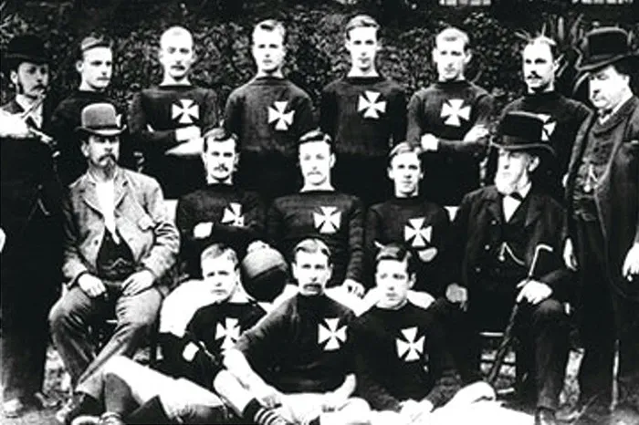
1880
세인트 마크스 교회의 축구 팀으로 시작한 맨체스터 시티
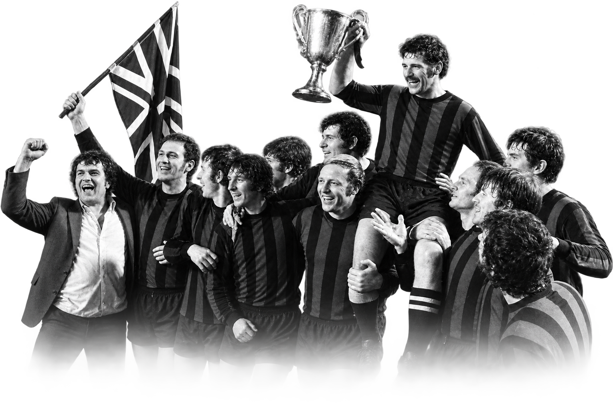
1937
맨시티 역사상 첫 리그 우승 기록
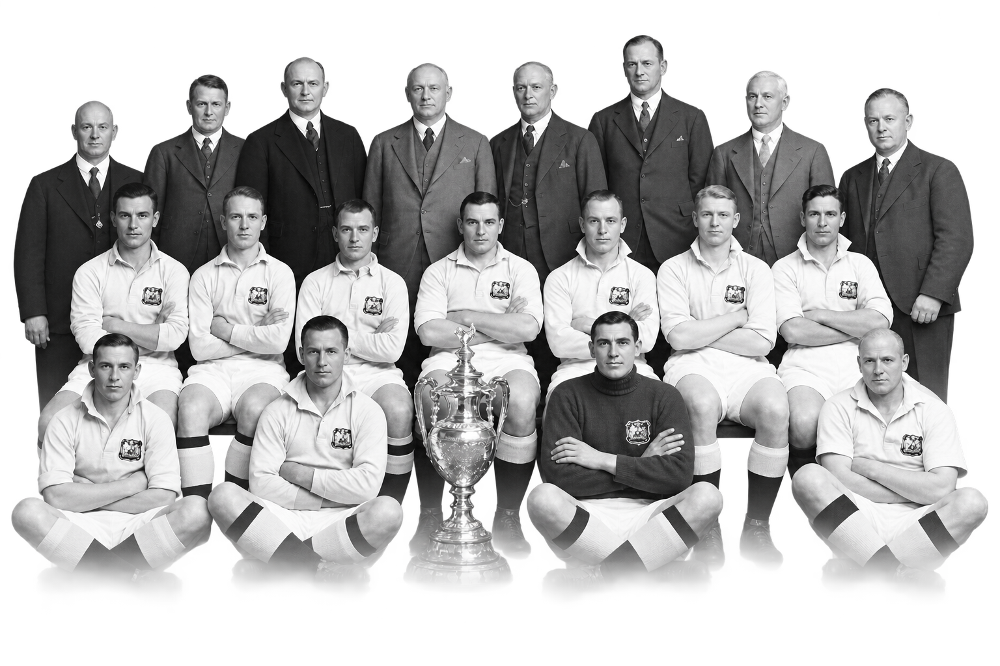
1968
맨시티의 찬란했던 첫 번째 전성기
2012
44년만에 PL 우승
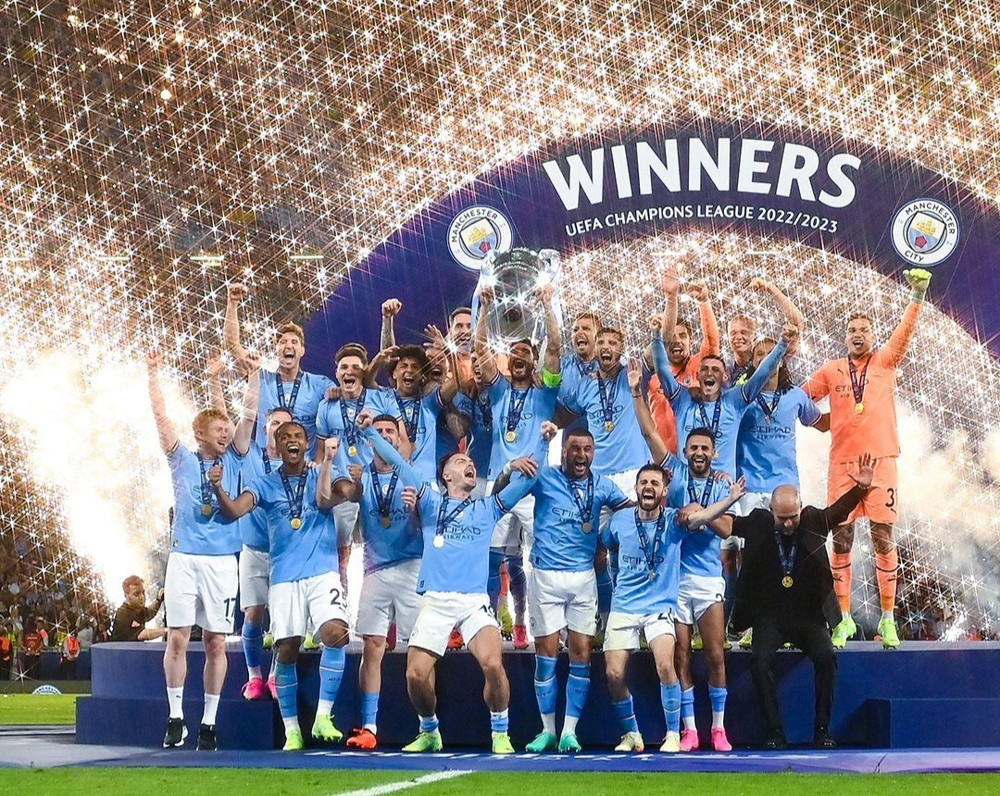
2023
구단 역사상 첫 트레블 달성
CLUB TROPHY
OUR
HONOURS
주요 우승 기록
CLUB CREST
OUR
CREST
구단 로고 변천사
-
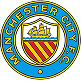
1880-1972 -
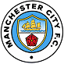
1972-1997 -
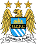
1997-2016 -
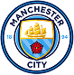
2016-
HOME STADIUM
OUR
HOME
에티하드 스타디움
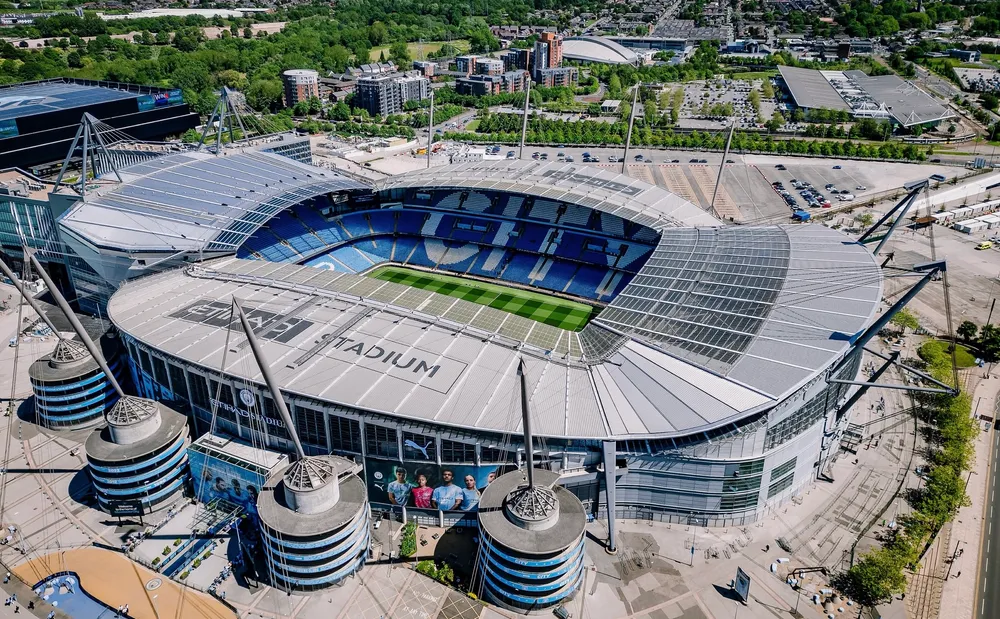
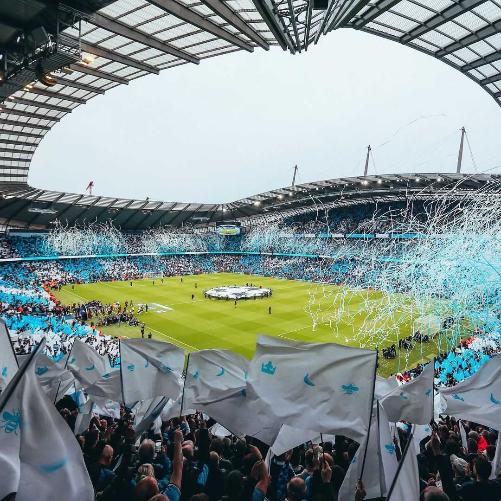
- 한글명 맨체스터 시 M11 3FF
- 완공 2003. 08. 10.
- 수용 인원 61,083명
- UEFA 등급 GRADE 4
CLUB SIGNATURE COLOR
SKY BLUE
#6CABDD
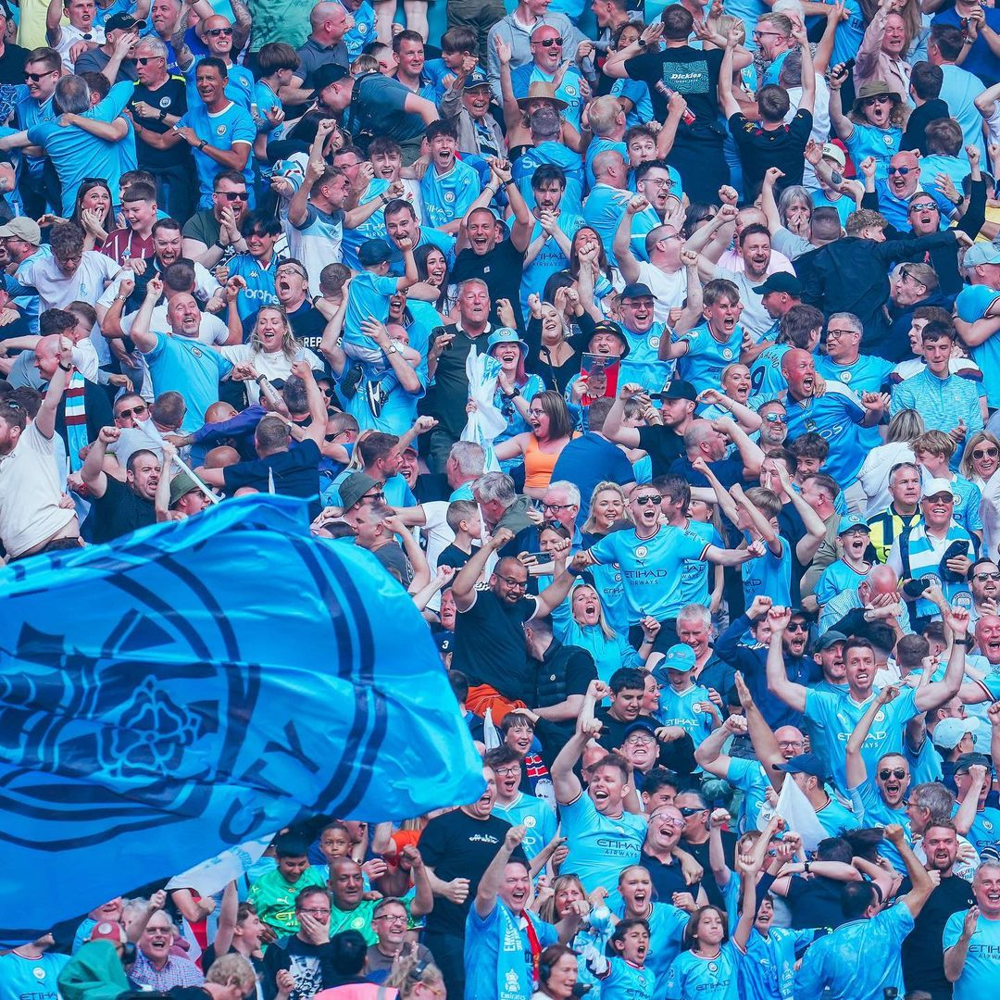
Manchester Is Blue